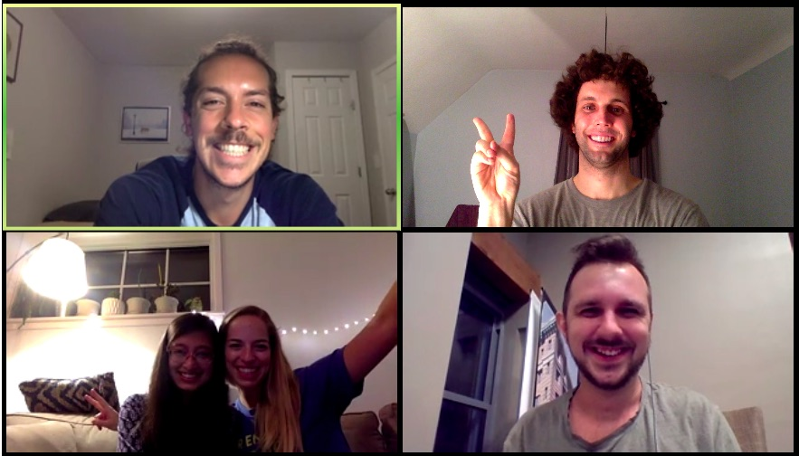
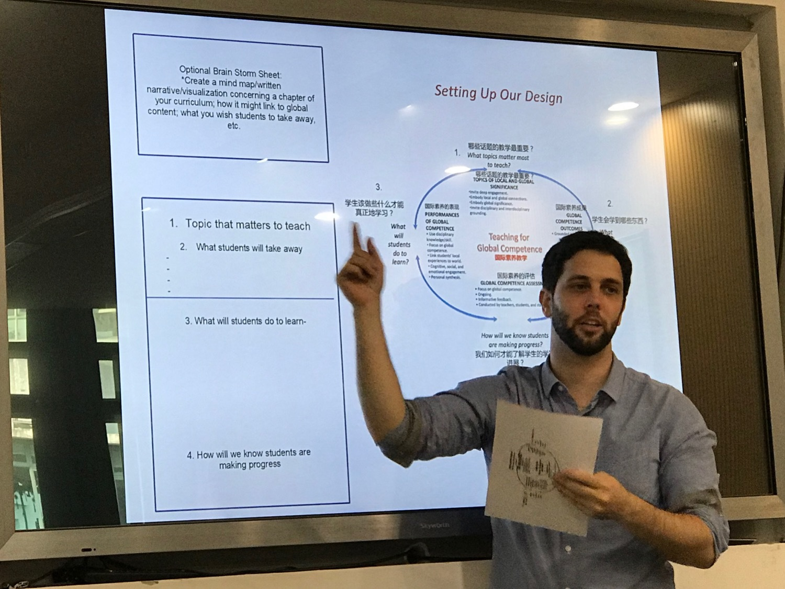

 Alongside leading learning groups with Students for Student, our teachers work as: teachers in US Public High Schools, educational researchers at Harvard, English lecturers for ESL students at Beijing Normal University, and as mentors for students preparing to study abroad.
We met as students at the Harvard Graduate School of Education and collectively have over 40 years of experience teaching and mentoring students. We have studied and can speak four other languages in addition to English (Chinese, Spanish, Oromo and Korean).
We emphasize relationship building in the Students for Students program, and look forward to the opportunity to get to know you in our upcoming classes.

Devon Wilson received his Master’s from the Harvard Graduate School of Education, and currently works at the Harvard Graduate School of Education’s (HGSE) - Project Zero as a researcher and professional development coach. He has facilitated teacher professional learning communities in the US, China, the Netherlands, Singapore, Canada, Bangladesh and Australia. Devon also works as a Teaching Assistant at Harvard for the Intro to Computer Science with Python course. In the past Devon has served as a Teach for China Teaching Fellow for two years, studied as a Fulbright Scholar in Xian China, and has worked as program manager for a non-profit at UC Berkeley dedicated towards cultivating students’ creativity and entrepreneurial skills.
Devon started the Students for Students program as an opportunity to work directly with students in providing impactful online learning experiences, and to promote educational equity in the field of online education.
Sign up and/or receive more info about our classes.
Email: studentsforstudents.uschina at gmail.com
Good Bee Education LLC